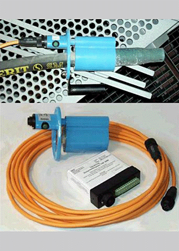

Nach dem Loslassen der Totmann-Schaltung wird die Strahlgut fördernde Leitung
mittels der Quetsche abgedrückt und die verbleibende Restmenge über den zweiten
Schlauch zum Ausgleichsbehälter geführt und dort abgeblasen. Somit wird
sichergestellt, dass nach der geforderten einen Sekunde kein Strahlgut
und keine Druckluft mehr vorne an der Düse austritt.
Ein besonderes Augenmerk muss auch auf den Totmann-Schalter selbst gelegt werden.
Es darf kein "Rödeldraht, Kabelbinder" oder ähnliches den Schalter zwangsfesthalten
und die Funktion überbrücken. Die Handkräfte für das Niederhalten des Schalters
sind relativ hoch, so dass der Strahler bereits nach wenigen Minuten ermüdet
und dazu verleitet wird, die Sicherheitseinrichtung zu manipulieren.